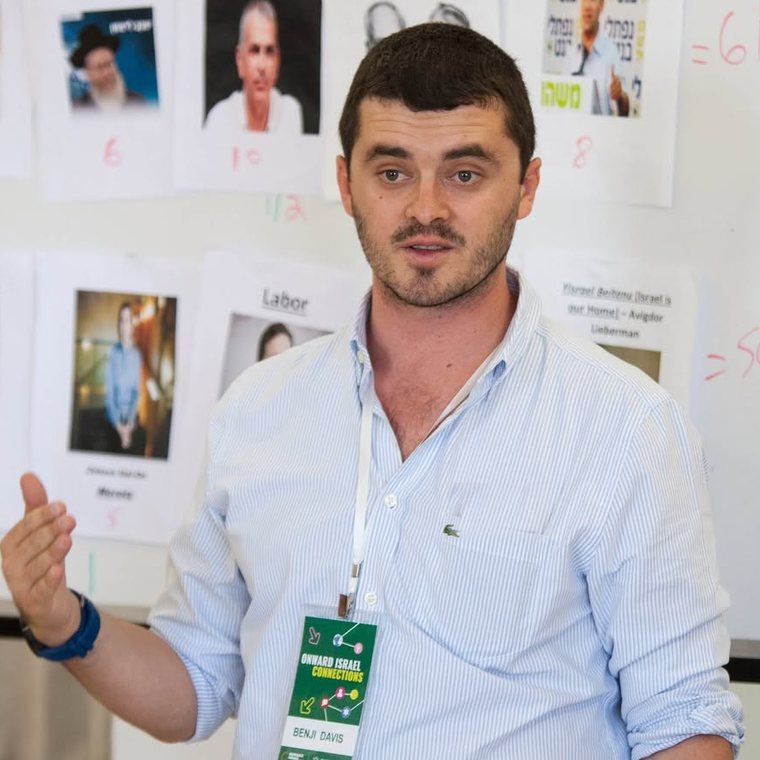

Navigating Israel as a Sacred, Sensitive and Controversial Topic
Israel is sacred to some people in the room, sensitive for others, and controversial for too many. This session shows what it looks like to hold all three at once, and to teach and talk about Israel as a sensitive subject rooted in commitment without giving up on the hard narratives.
More about this session
Complexity has become the default answer in Israel education, and it is not enough on its own. A sensitive topic is one that touches people's deepest commitments, which is why it cannot be taught the same way as a controversial one where every position is up for debate. Participants work through where the line sits between the two, what a Zionist vision asks of a community that still wants to engage Palestinian perspectives honestly, and how to build a conversation that respects both the sacred and the unresolved.
Identifying Why Israel Matters and Translating That to Educational Practice
Israel education is not one thing. Before deciding what to teach, a community has to name what Israel is for in the lives of its members, and this session gives leaders the tools to do that and to act on it.
More about this session
Participants work through the competing models of Israel education: Israel as homeland, as a civic project, as a source of Jewish meaning, as a subject of academic study, and more. Each model answers the question of purpose differently, and each one asks something different of the educators, rabbis and parents who carry it. The group leaves with a clear "why" for its own setting and a sense of what that why requires in practice. Built for professional and lay leadership groups, federation and foundation missions, and school and synagogue teams.
Engaging the Sacred and the Difference: What Does It Mean to Be a Mature Zionist?
Can a person be a committed Zionist and still hold real questions about Israel? This session argues yes, and shows how, through the idea of Mature Zionism.
More about this session
Mature Zionism means Zionism taught from within, as a sacred commitment with values and ideas of its own, alongside an honest encounter with what is different, because no one can embrace something as sacred without also meeting the alternatives. Participants consider the purpose of Israel in the lives of Jews outside it, the idea of Jews as a nation, and the compromises that hold a Jewish democracy together. They reflect on their own connection to Israel and on what kind of Zionist they want to be.
What Is Going On in Israel and How Do I Talk About It Back Home?
The group has seen Israel up close. Now they return to a campus, a workplace, a family table and an online feed where Israel is one of the most polarizing topics there is, and this session prepares them to lead that conversation.
More about this session
The session presents a model for engaging the different paradigms and political lenses people bring to Israel, and introduces the "Rootedness and Respect" approach for productive discussion. Participants practice telling what is genuinely complex from what is actually clear, and sorting legitimate criticism of Israel from delegitimization. They leave able to speak about Israel in their own communities with confidence, knowledge and nuance, and to hold the conversation open with people who see it differently.
All of these sessions are drawn from my scholarship. These workshops have been given at national conferences, yom limmuds, professional development workshops, and synagogue events.
Briefing
Israel Update: What's Up With Israel Today
How does this week's news fit into Israeli politics, the war with Iran and its proxies, and the geopolitical challenges and opportunities facing the country? A briefing on what is happening on the ground and why, with time for the questions the group has been carrying since they landed.
Potential topics to discuss
The update can be shaped around any of these topics, each of which also stands on its own as a full session.
- Am I a Zionist? What Israel means in the lives of Jews who live outside it.
- Israeli Politics: I Don't Get It. The system, its pros and cons, and where the currents are flowing.
- What Does a Jewish Democracy Look Like? The compromises between secular, religious, Haredi and Arab citizens that hold Israeli society together.
- Three Lenses to Understanding the Conflict. Geopolitics, social justice and tribal identity as frameworks.
- The Israel-Iran Conflict. Why the current war is with Iran and its proxies, and what that means for Israel's security.
- What's Complex and What's Not. Telling the genuinely complicated parts of the conflict from the parts that are actually clear.
More about this session
Works well as a first-night orientation, so the group lands with a map of what it is about to see, or as a closing session that pulls the week together. For groups with a specific focus, such as security, religion and state, or the Israel-Diaspora relationship, the update is built around that focus.
